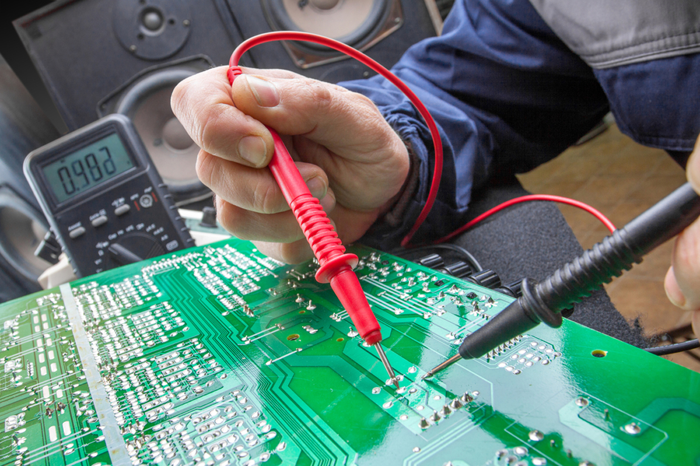
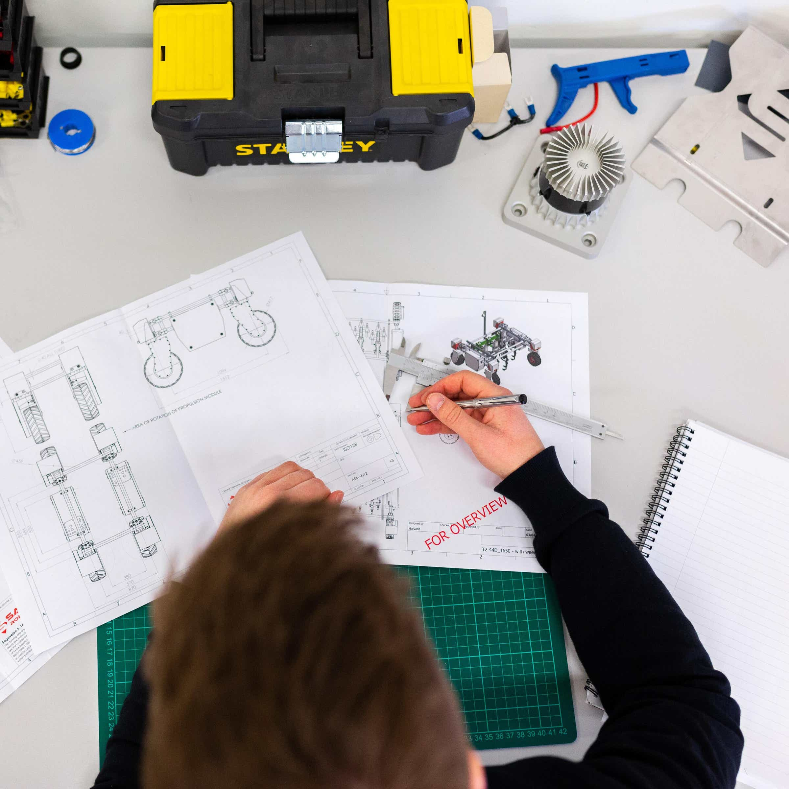
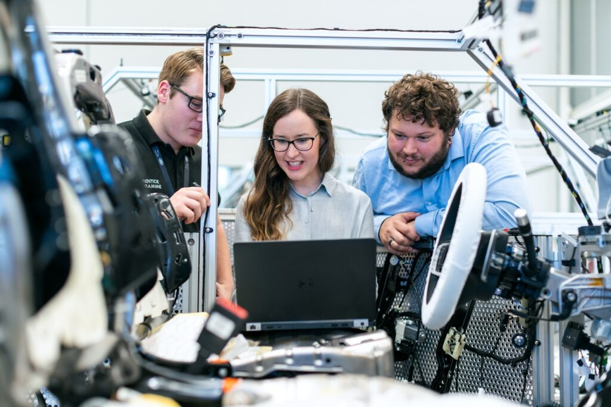

Technically, mechanical engineering is the application of the principles and problem-solving techniques of engineering from design to manufacturing to the marketplace for any object. Mechanical engineers analyze their work using the principles of motion, energy, and force—ensuring that designs function safely, efficiently, and reliably, all at a competitive cost. Mechanical engineers make a difference. That's because mechanical engineering careers center on creating technologies to meet human needs. Virtually every product or service in modern life has probably been touched in some way by a mechanical engineer to help humankind. Being ingrained in many challenges and innovations across many fields means a mechanical engineering education is versatile. To meet this broad demand, mechanical engineers may design a component, a machine, a system, or a process. This ranges from the macro to the micro, from the largest systems like cars and satellites to the smallest components like sensors and switches. Anything that needs to be manufactured—indeed, anything with moving parts—needs the expertise of a mechanical engineer. Become a mechanical engineer.. What do mechanical engineers do?
Mechanical engineering combines creativity, knowledge and analytical tools to complete the difficult task of shaping an idea into reality. This transformation happens at the personal scale, affecting human lives on a level we can reach out and touch like
robotic prostheses. It happens on the local scale, affecting people in community-level spaces, like with agile interconnected microgrids. And it happens on bigger scales, like with advanced power systems, through engineering that operates
nationwide or across the globe. |
|
Scop of Mechanical EngineeringAutomation Engineer Automation engineers design, build and maintain self-operating machines and processes. They work closely with clients to understand the process or task being automated. An automation engineer then designs, tests, programs and maintains
the machine or system. |
|
 |
Research and Development EngineeringResearch and development engineers build new manufacturing methods and products. They also improve existing systems to increase productivity, safety and efficiency. They build concept designs, test prototypes and help take new methods and products to market. Research and development engineers need to be innovative and analytical to recognize problems and find solutions. They work in a deadline-driven environment and need to be able to work both independently and with a team. |
Instrumentation EngineerInstrumentation engineers specialize in equipment that monitors and controls engineering systems. They design, build, test, install, manage and maintain equipment that ensures other engineering systems work correctly. They need to understand how many systems work together, how and where to measure acceptable ranges and stay current on changing health and safety regulations. |
 |
|  |
Senior Design EngineerSenior design engineers specialize in creating new products. They usually lead a team from the beginning of the project through production. Senior design engineers often act as project managers by working with customers to understand their goals and requirements, developing a schedule and budget, leading the team through the design process and working to improve processes for future projects. They need to be able to assess and communicate risk, understand high-level design processes and lead product testing. |
Powertrain EngineerPowertrain engineers are mechanical engineers that work in the automotive industry. They improve the appearance and performance of engines, the powertrain, electrical components and software in modern vehicles. Powertrain engineers might work with motorcycles, cars and commercial vehicles, like box trucks and semi-trucks. They work closely with clients to meet their goals and answer any questions they have. |
 |